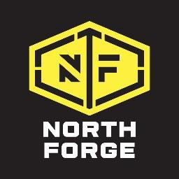

Chair of the ACE Department, Haider Al-Saidi is working hard to create an environment that encourages the students of Red River College to embrace entrepeneurship.
RRC has recently finished remodeling a creative space for local entrepeneurs in Innovation Alley. This project space, located at 321 McDermot Ave celebrated its grand opening in April 2017. This space will be utilized by local entrepeneurs and RRC students to collaborate as well as complete industry projects. This will provide our students hands-on experience with cutting-edge technologies as well as network with local IT professionals.
Students will be encouraged to present their own entrepeneurial ideas to be evaluated by a board, and successful applicants will be granted access to part of this new development space.
 Additionally, RRC is partnering with North Forge Technology Echange, an innovation-based economic development agency and a powerhouse community dedicated to fueling Manitoba’s innovation economy. RRC is willing to sponser a number of students by covering the cost of the monthly membership fee. Members of North Forge gain access to a wide variety of machinery to prototype and build thier product ideas. Available shops include metals, wood, 3D printing, circutboard printing, painting, and more.